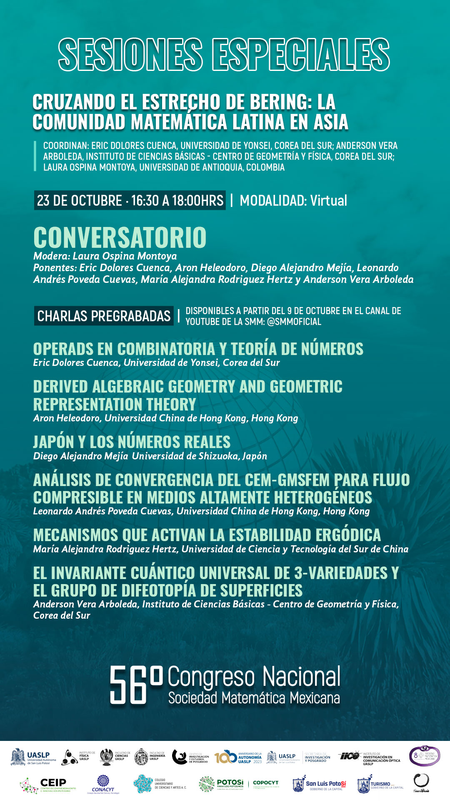
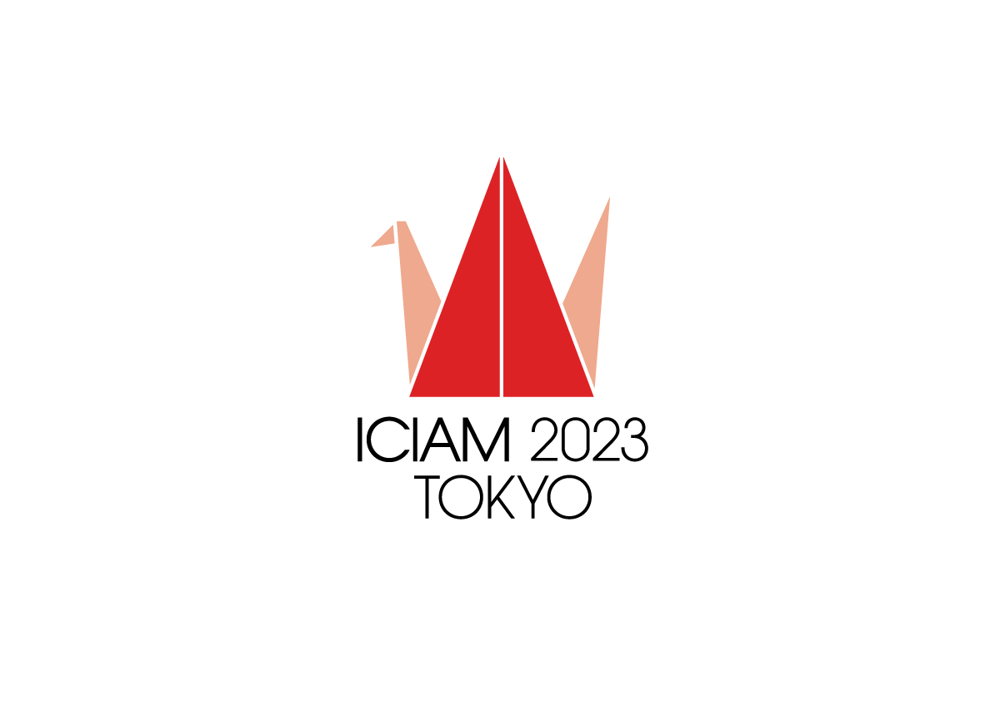

Minicourse "An introduction to combinatorial species" Abdus Salam School of Mathematical Sciences, Lahore, Pakistan. Nov 20-Dec 01, 2025
Speaker at Abdus Salam International Conference on Mathematical Sciences and Emerging Technologies AS-ICMSET-2025. "The multiverse of order theory" Abdus Salam School of Mathematical Sciences. Pakistan news report about the conference (I appear on second 45) Lahore, Pakistan. November 24-26, 2025
Keynote speaker at 4th International Conference on Mathematical Empowerment and Future Trends. "Introduction to combinatorial species" Government College University, Pakistan news report about the conference Faisalabad, Pakistan. November 20-22, 2025
(online) Key note speaker at 7th International Conference on Pure and Applied Mathematics at University of Sargodha, Pakistan, April 17-18, 2025.
-
Speaker at 32nd KIAS Combinatorics Workshop "One third of poset combinatorics was missing". Busan, South Korea. December 19-21, 2024
- Speaker (online) at 57 National Congress of the Mexican Mathematical Society. "Everyday I'm Shuffling!", October 21-25, 2024.
- Speaker at Autum school on low dimensional topology and related concepts. "Combinatorics of the product of a simplicial set and a dendroidal set". Pohang, South Korea. Sept 30-Oct 4, 2024 .
-
Speaker (online) at Combinatorial and Additive Number Theory (CANT 2024) “Zeta values as an algebra over an operad”, New York, USA. May 22-24, 2024.
-
Speaker (online) at "Científicos Politécnicos Destacados"
Mexico city, Mexico. May 23, 2024.
-
Speaker at 6th Meeting of Mexican Mathematicians in the World
La óperad de posets 101: Los posets Wixárika" Casa Matemática Oaxaca-BIRS (Banff International Research Station for Mathematical Innovation and Discovery), México, May 6 - 10 2024.
-
Speaker at ESFM Math Seminar.
12-12:50 'Introducción a las álgebras sobre la operad de posets', 13-13:50 'Series de barajeo y sus aplicaciones a la topología dendroidal'.
IPN, Mexico, May 3 2024.
-
Speaker (online) at Ukraine Algebra Conference At the End of the Year 2023
at Taras Shevchenko National University of Kyiv, 26 till 27 of December 2023.
-
Speaker at Polynomial Mathematics Seminar.
21 December 2023 at Ito campus, Kyushu University, Fukuoka, Japan.
-
Invited speaker (online) at 6th ICPAM, December 06-07, 2023 University of Sargodha, Sargodha, Pakistan.
-
Invited speaker (online) at Simposio de Física Matemáticas e ingenieria 2023 Red Global MX capítulo España November 21-23, 2023, online, Spain.
-
Speaker (online) at Wolfram Technology Conference, November 1-3, 2023, online, USA.
-
Speaker at Korean Mathematical Society annual meeting, October 26-28, 2023, Seoul, Korea.
-
Speaker at the meeting of the Mexican Mathematical Society:Cruzando el estrecho de Bering.

We invited 6 Latin mathematicians working in Asia to describe their experiences and answer questions of the public.
-
Speaker at Mini sympossium "Poset Combinatorics" 2D (Aug.22, 15:30-17:10) at the ICIAM 2023, Waseda University, Japan.

-
KIAS Combinatorics workshop "Poset Combinatorics and zeta values"01 Jun. 2023, Jeju, South Korea.
-
Online talk at the International Algebraic Conference “At the End of the Year 2022”, Kyiv Ucraine. From December 27 to December 28, 2022.
You Tube LINK
-
Visiting Pakistan Oct 15-Oct 27. I talked at the University of the Punjab, Govt. College University Lahore/ Faisalabad, and LUMS University.
-
55 National congress of the mexican mathematical society / 55 Congreso Nacional de la Sociedad Matemática Mexicana, Los resultados de Ramanujan sobre números Eulerianos y las series de orden, October 23-28 2022, Mexico. Pre recorded talk
-
Invited speaker at The 3rd International Conference on Mathematics and Applications (Icomathapp)
August 23-24, 2022, Jakarta, Indonesia.
-
Acepted on the
Latinx in the Mathematical Sciences Conference 2022
hosted by the Institute for Pure and Applied Mathematics (IPAM) at the UCLA campus from July 7-9, 2022.
-
AMS Special Session on Latinxs in Combinatorics Wednesday 04/06/2022 from 10:30 AM - 11:00 AM Seattle time.
-
Power series representing posets, en el "African Math Seminar", 16 Dic. 2021.
-
Series de potencia representando posets, en el "Alexander Zavadskij’s Seminar on Representation of Algebras and Their Applications", 7 Sept. 2021.
-
Espacios Wixarika representados por series de potencia, en el "Reunion academica nacional 2021", 25 Ago. 2021.
-
XIII International Algebraic Conference in Ukraine (July 6-9, 2021, Kyiv, Ukraine)
You Tube LINK
-
Versión en español del evento "Interacciones en la Frontera"
Video LINK
-
Talk at the Wolfram Technology Conference, October 2021.
Title : "New Identities in Combinatorics Discovered with help from Mathematica Software"